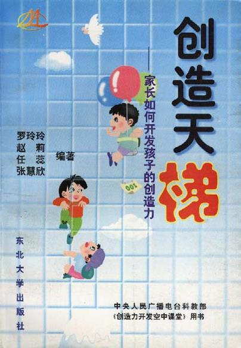

向左走·向右走

总体观点
《向左走·向右走》（A Chance of Sunshine）是幾米最具代表性、改编影视剧最多的划时代爱情绘本杰作。作品以二十世纪末喧嚣冷漠的大都市为背景，引用波兰女诗人辛波丝卡的名诗‘他们彼此深信，是瞬间迸发的热情让他们相遇。这样的确定是美丽的，但变幻无常更为美丽’作为全书精神之眼。
作者精妙抓住了现代都市生活的孤独特质：住在同一栋公寓大楼、一墙之隔的提琴家男子与翻译家女子，由于出门一个习惯向左走、一个习惯向右走，两人在日复一日的上班通勤、公园散步中无数次擦肩而过却浑然不知。一场喷水池畔的偶遇让他们堕入爱河，然而一场暴雨与被雨水打湿模糊的电话号码又让彼此陷入漫长失联。幾米用极富空间透视与电影蒙太奇感的水彩画面，生动诠释了缘分的脆弱与坚韧，抚慰了数百万在人群中寻觅另一半的孤单灵魂。
核心观点
-
1. 习惯的物理牢笼与都市擦肩而过的空间几何学
人们被自身固化的微小生活习惯（如出门转向、乘坐特定车厢）所禁锢，在严密的几何对称轨迹中永远错失平行的另一半。
男主角拉着小提琴箱向右走，女主角抱着厚厚书本向左走，两人在旋转木马两端背道而驰，近在咫尺却如隔银河。 -
2. 雨水模糊的电话纸条：缘分的脆弱与偶然性法则
连接两颗炽热心灵的纽带往往极其脆弱，一场不可抗力的暴雨便能轻易斩断世俗联系，把相爱推入不可知的等待炼狱。
突如其来的滂沱大雨淋湿了彼此互留电话的纸片，墨水在雨水中晕开模糊成一团无法辨认的污渍，彼此在公用电话亭前发疯盲拨。 -
3. 大都市人潮汹涌中的深层本体论孤寂
城市越繁华、人流越拥挤，个体的孤独感反而越发庞大如深渊；在千万张擦肩而过的陌生面孔中，唯有一人是解药却杳无音信。
男女主角分别坐在拥挤的双层巴士上望着窗外的灰色雨幕，各自在相同的咖啡馆、相同的唱片店流下相似的落寞眼泪。 -
4. 季节流转作为时间创伤的视觉化度量
幾米借春夏秋冬的草木荣枯、秋叶纷飞与寒冬大雪，直观呈现等待之痛在漫长岁月侵蚀下的发酵与沉淀。
春天的杜鹃花开满枝头，夏天的热浪蒸腾柏油路，秋天的落叶铺满长椅，冬天的积雪覆盖屋顶，两人在四季流转中日渐消瘦。 -
5. 雪崩般的拆迁奇迹：打破平行的命运恩典
命运终将在意想不到的废墟中完成闭环；当整座老公寓因城市改建拆除冰冷围墙的瞬间，平行的轨迹终于迎来天崩地裂般的重合。
挖掘机推倒了两间卧室之间隔绝三年的那堵承重墙，在纷飞的白雪中他们各自拉着行李箱，在废墟瓦砾间迎头相撞泪流满面。
全书结构
-
一墙之隔的陌生人：向左走与向右走的平行世界
交代住在同一栋老楼的拉琴男子与翻译女子，因出门习惯方向相反，在繁华城市的地铁口、公园、斑马线上无数次擦肩而过。
画面采用双联画左右对立排版，左侧是女主角踏着晨光向左迈步，右侧是男主角迎着微风向右启程，冷漠都市将两人无情隔开。 -
喷水池畔的阳光奇迹：金风玉露一相逢
阳光明媚的冬日午后，两人在公园圆形喷水池前同时驻足相遇，相谈甚欢度过了生命中最甜美的午后时光，互留电话匆匆作别。
鸽子在水花四溅的池塘旁起飞，两人坐在长椅上吃着同一个冰淇淋，以为找到了此生不渝的终身伴侣。 -
暴雨倾盆的灾难失联与电话盲拨的绝望
突降暴雨淋湿了写有电话的纸条，回家发现字迹彻底化作墨迹，两人发疯般在各个公用电话亭试探拨打，终归是一声声冰冷空号。
雨水顺着电话亭的玻璃幕墙滑落，男主角抓着听筒绝望捶打铁壳，女主角在昏暗台灯下用放大镜拼凑字迹徒劳痛哭。 -
四季轮转的相思之苦与决定离开的告别
两人在整整一年里在同一个城市相互寻觅却屡屡错过，身心俱疲下各自决定收拾全部行李离开伤心地，远走异国他乡重新开始。
两辆出租车一左一右停在公寓楼下，两人各自背上行囊走向不同方向的车站，大雪纷飞将城市染成白茫茫一片。 -
白雪中的重逢拥抱：春天终于来临
在冰雪覆盖的中央广场，因出租车抛锚各自下车步行的男女主角终于在漫天飘雪中迎面相撞，在相拥而泣中迎来宿命大团圆。
大衣滑落雪地，小提琴箱与厚辞典散落一旁，两人紧紧相拥在雪中旋转，冬天的严寒在此刻被初春的阳光彻底消融。